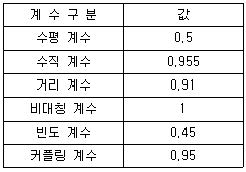
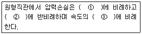
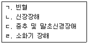

산업위생관리기사 (2014-03-02 기출문제)
1과목: 산업위생학개론
1. 무색, 무취의 기체로서 흙, 콘크리트, 시멘트나 벽돌 등의 건축자재에 존재하였다가 공기 중으로 방출되며 지하공간에 더 높은 농도를 보이고, 폐암을 유발하는 실내공기 오염물질은 무엇인가?
- 라듐
- 라돈
- 비스무스
- 우라늄
(정답률: 81%)

2. 다음 [표]를 이용하여 산출한 권장무게한계(RWL)는 약 얼마인가?(단, 개정된 NIOSH의 들기작업 권고기준에 따른다.)

- 4.27kg
- 8.55kg
- 12.82kg
- 21.36kg
(정답률: 58%)
3. 1년간 연근로시간이 240000시간인 작업장에 5건의 재해가 발생하여 500일의 휴업일수를 기록하였다. 연간근로일수를 300일로 할 때 강도율(intensity rate)은 약 얼마인가?
- 1.7
- 2.1
- 2.7
- 3.2
(정답률: 53%)
4. 다음 중 산업위생관리 업무와 가장 거리가 먼 것은?
- 직업성 질환에 대한 판정과 보상
- 유해작업환경에 대한 공학적인 조치
- 작업조건에 대한 인간공학적인 평가
- 작업환경에 대한 정확한 분석기법의 개발
(정답률: 83%)
5. 직업과 적성에 대한 내용 중에서 심리적 적성검사에 해당되지 않는 것은?
- 지능검사
- 기능검사
- 체력검사
- 인성검사
(정답률: 81%)
6. 다음 중 재해예방의 4원칙에 관한 설명으로 틀린 것은?
- 재해발생과 손실의 발생은 우연적이므로 사고 발생 자체의 방지가 이루어져야 한다.
- 재해발생에는 반드시 원인이 있으며, 사고와 원인의 관계는 필연적이다.
- 재해는 원칙적으로 예방이 불가능하므로 지속적인 교육이 필요하다.
- 재해예방을 위한 가능한 안전대책은 반드시 존재한다.
(정답률: 86%)
7. 어떤 젊은 근로자의 약한 쪽 손의 힘이 평균 50kp(kilo-pound)이다. 이러한 근로자가 무게 10kg인 상자를 두 손으로 들어 올리는 작업을 할 때의 작업강도(%MS)는 얼마인가?(단, 1kp는 질량 1kg을 중력의 크기로 당기는 힘을 나타낸다.)
- 0.1
- 1
- 10
- 100
(정답률: 66%)
8. 산업안전보건법에 따라 사업주가 허가대상 유해물질을 제조하거나 사용하는 작업장의 보기 쉬운 장소에 반드시 게시하여야 하는 내용이 아닌 것은?
- 제조날짜
- 취급상의 주의사항
- 인체에 미치는 영향
- 착용하여야 할 보호구
(정답률: 75%)
9. 산업위생관리 측면에서 피로의 예방 대책으로 적절하지 않은 것은?
- 각 개인에 따라 작업량을 조절한다.
- 작업과정에 적절한 간격으로 휴식시간을 둔다.
- 개인의 숙련도 등에 따라 작업속도를 조절한다.
- 동적인 작업을 모두 정적인 작업으로 전환한다.
(정답률: 85%)
10. 다음 중 산업안전보건법령 상 중대재해에 해당하지 않는 것은?
- 사망자가 1명 발생한 재해
- 부상자가 동시에 5명 발생한 재해
- 직업성 질병자가 동시에 12명 발생한 재해
- 3개월 이상의 요양을 요하는 부상자가 동시에 3명이 발생한 재해
(정답률: 69%)
11. 다음 중 우리나라의 노출기준 단위가 다른 하나는?
- 결정체 석영
- 유리섬유 분진
- 광물성섬유
- 내화성 세라믹섬유
(정답률: 43%)
12. 다음 중 L5/S1 디스크에 얼마 정도의 압력이 초과되면 대부분의 근로자에게 장해가 나타내는가?
- 3400N
- 4400N
- 5400N
- 6400N
(정답률: 74%)
13. 미국산업위생학술원(AAIH)에서 채택한 산업위생전문가로서의 책임에 해당하지 않는 것은?
- 직업병을 평가하고 관리한다.
- 성실성과 학문적 실력에서 최고 수준을 유지한다.
- 전문분야로서의 산업위생을 학문적으로 발전시킨다.
- 과학적 방법의 적용과 자료 해석의 객관성 유지한다.
(정답률: 80%)
14. 피로의 현상과 피로조사방법 등을 나타낸 내용 중 가장 관계가 먼 것은?
- 피로현상은 개인차가 심하므로 작업에 대한 개체의 반응을 수치로 나타내기 어렵다.
- 노동수명(turn over ratio)으로서 피로를 판정하는 것은 적합하지 않다.
- 피로조사는 피로도를 판가름하는데 그치지 않고 작업방법과 교대제 등을 과학적으로 검토할 필요가 있다.
- 작업시간이 등차급수적으로 늘어나면 피로회복에 요하는 시간은 등비급수적으로 증가하게 된다.
(정답률: 64%)
15. 다음 중 주요 실내 오염물질의 발생원으로 가장 보기 어려운 것은?
- 호흡
- 흡연
- 연소기기
- 자외선
(정답률: 76%)
16. 다음 중 고온에 순응된 사람들이 고온에 계속적으로 노출되었을 때 증가하는 현상을 나타내는 것은?
- 심장박동
- 피부온도
- 직장온도
- 땀의 분비속도
(정답률: 58%)
17. 다음 중 직업성 피부질환에 관한 내용으로 틀린 것은?
- 작업환경 내 유해인자에 노출되어 피부 및 부속기관에 병변이 발생되거나 악화되는 질환을 직업성 피부질환이라 한다.
- 피부종양은 발암물질과의 피부의 직접 접촉뿐만 아니라 다른 경로를 통한 전신적인 흡수에 의하여도 발생될 수 있다.
- 미국의 경우 피부질환의 발생빈도가 낮아 사회적 손실을 적게 추정하고 있다.
- 직업성 피부질환의 간접적 요인으로 인종, 아토피, 피부질환 등이 있다.
(정답률: 77%)
18. 다음 중 최대작업영역의 설명으로 가장 적당한 것은?
- 움직이지 않고 상지(上肢)를 뻗쳐서 닿는 범위
- 움직이지 않고 전박(前膊)과 손으로 조작할 수 있는 범위
- 최대한 움직인 상태에서 상지(上肢)를 뻗쳐서 닿는 범위
- 최대한 움직인 상태에서 전박(前膊)과 손으로 조작할 수 있는 범위
(정답률: 70%)
19. 다음 중 물질안전보건자료(MSDS)의 작성 원칙에 관한 설명으로 틀린 것은?
- MSDS의 작성단위는 「계랑에 관한 법률」이 정하는 바에 의한다.
- MSDS는 한글로 작성하는 것을 원칙으로 하되 화학물질명, 외국기관명 등의 고유명사를 영어로 표기할 수 있다.
- 각 작성항목은 빠짐없이 작성하여야 하며, 부득이 어느 항목에 대해 관련 정보를 얻을 수 없는 경우 작성란은 공란으로 둔다.
- 외국어로 되어 있는 MSDS를 번역하는 경우에는 자료의 신뢰성이 확보될 수 있도록 최초 작성기관명 및 시기를 함께 기재하셔야 한다.
(정답률: 84%)
20. 이탈리아 의사인 Ramazzini는 1700년에 “직업인의 질병(De Morbis Artificum Diatriba)"를 발간하였는데, 이 사람이 제시한 직업병의 원인과 가장 거리가 먼 것은?
- 근로자들의 과격한 동작
- 작업장을 관리하는 체계
- 작업장에서 사용하는 유해물질
- 근로자들의 불완전한 작업 자세
(정답률: 68%)
2과목: 작업위생측정 및 평가
21. 열, 화학물질, 압력 등에 강한 특성을 가지고 있어 고열공정에서 발생되는 다핵방향족탄화수소 채취에 이용되는 막 여과지로 가장 적절한 것은?
- PVC
- 섬유상
- PTFE
- MCE
(정답률: 80%)
22. 습구온도 측정에 관한 설명으로 옳지 않는 것은 무엇인가? (단, 고시 기준)(오류 신고가 접수된 문제입니다. 반드시 정답과 해설을 확인하시기 바랍니다.)
- 아스만통풍건습계는 눈금 가격이 0.5도인 것을 사용한다.
- 아스만통풍건습계의 측정시간은 25분 이상이다.
- 자연습구온도계의 측정시간은 5분 이상이다.
- 습구흑구온도계의 측정온도는 15분 이상이다.
(정답률: 59%)
23. 어느 작업환경에서 발생되는 소음원 1개의 소음레벨이 92dB라면 소음원이 8개 일 때의 전체소음레벨은?
- 101dB
- 103dB
- 1⑤dB
- 107dB
(정답률: 76%)
24. 어떤 작업장에서 벤젠(C6H6, 분자량은 78)의 8시간 평균 농도가 5 ppmv(부피단위)었다. 측정당시의 작업장 온도는 20℃ 이었고, 대기압은 760mmHg(1atm)이었다. 이 온도와 대기압에서 벤젠 5 ppmv에 해당하는 mg/m3은?
- 13.22
- 14.22
- 15.22
- 16.22
(정답률: 51%)
25. 누적소음노출량 측정기로 소음을 측정하는 경우, 기기 설정으로 적절한 것은? (단, 고시 기준)
- Criteria=80dB, Exchange Rate=5dB, Threshold=90dB
- Criteria=80dB, Exchange Rate=10dB, Threshold=90dB
- Criteria=90dB, Exchange Rate=5dB, Thershold=80dB
- Criteria=90dB, Exchange Rate=10dB, Threshold=80dB
(정답률: 83%)
26. 어느 작업장의 온도를 측정하여, 건구온도 30℃, 자연습구온도 30℃, 흑구온도 34℃를 얻었다. 이 작업장의 옥외ㅣ(태양광선이 내리쬐지 않는 장소) WBGT는? (단, 고시 기준)
- 30.4 ℃
- 30.8 ℃
- 31.2 ℃
- 31.6 ℃
(정답률: 74%)
27. 흡착제로 사용되는 활성탄의 제한점에 관한 내용으로 옳지 않은 것은 무엇인가?
- 휘발성이 적은 고분자량의 탄화수소 화합물의 채취효율이 떨어짐
- 암모니아, 에틸렌, 염화수소와 같은 저비점 화합물은 비효과적임
- 비교적 높은 속도는 활성탄의 흡착용량을 저하시킴
- 케톤의 경우 활성탄 표면에서 물을 포함하는 반응에 의하여 파괴되어 탈착률과 안정성에서 부적절함
(정답률: 50%)
28. Hexane의 부분압은 150mmHg(OEL 500ppm)이었을 때 Vapor hazard Ration(VHR)는?
- 335
- 355
- 375
- 395
(정답률: 62%)
29. 호흡기계의 어느 부위에 침착하더라도 독성을 나타내는 입자물질(비암이나 비중격천공을 일으키는 입자물질이 여기에 속함, 보통 입경 범위 0~100)로 옳은 것은? (단, 미국 ACGIH 기준)
- SPM
- IPM
- TPM
- RPM
(정답률: 56%)
30. 다음의 2차 표준기구 중 주로 실험실에서 사용하는 것은?
- 건식가스미터
- 로타미터
- 습식테스트미터
- 열선기류계
(정답률: 62%)
31. 순수한 물의 몰(M)농도는? (단, 표준 상태 기준)
- 35.2
- 45.3
- 55.6
- 65.7
(정답률: 56%)
32. 유기용제 작업장에서 측정한 톨루엔 농도는 65, 150, 175, 63, 83, 112, 58, 49, 2⑤, 178 ppm이다. 산술평균과 기하평균값은 각각 얼마인가?
- 산술평균 108.4, 기하평균 100.4
- 산술평균 108.4, 기하평균 117.6
- 산술평균 113.8, 기하평균 100.4
- 산술평균 113.8, 기하평균 117.6
(정답률: 76%)
33. 유기성 또는 무기성 가스나 증기가 포함된 공기 또는 호기를 채취할 때 사용되는 시료채취백에 대한 설명으로 옳지 않는 것은?
- 시료채취 전에 백의 내부를 불활성가스로 몇 번 치환하여 내부 오염물질을 제거한다.
- 백의 재질이 채취하고자 하는 오염물질에 대한 투과성이 높아야 한다.
- 백의 재질과 오염물질 간에 반응이 없어야 한다.
- 분석할 때까지 오염물질이 안정하여야 한다.
(정답률: 68%)
34. 시료를 포집할 때 4%의 오차가 또 포집된 시료를 분석할 때 3%의 오차가 발생하였다면 다른 오차는 발생하지 않았다고 가정할 때 누적오차는?
- 4%
- 5%
- 6%
- 7%
(정답률: 67%)
35. 작업장내의 오염물질 측정방법인 검지관법에 관한 설명으로 옳지 않는 것은?
- 민감도가 낮다.
- 특이도가 낮다.
- 측정 대상 오염물질의 동정 없이 간편하게 측정할 수 있다.
- 맨홀, 밀폐공간에서의 산소부족 또는 폭발성 가스로 인한 안전문제가 될 때 유용하게 사용될 수 있다.
(정답률: 81%)
36. 직경분립충돌기에 관한 설명으로 옳지 않은 것은 무엇인가?
- 흡십성, 흉곽성, 호흡성 입자의 크기별 분포와 농도를 계산할 수 있다.
- 호흡기의 부분별로 침착된 입자크기의 자료를 추정할 수 있다.
- 입자의 질량크기분포를 얻을 수 있다.
- 되튐 또는 과부하에 대한 시료손실이 없어 비교적 정확한 측정이 가능하다.
(정답률: 77%)
37. 유해가스를 생리학적으로 분류할 때 단순 질식제와 가장 거리가 먼 것은?
- 아르곤
- 메탄
- 아세틸렌
- 오존
(정답률: 67%)
38. 온도표시에 관한 내용으로 옳지 않는 것은?
- 실온은 1∼35℃
- 미온은 30∼40℃
- 온수는 60∼70℃
- 냉수는 4℃ 이하
(정답률: 80%)
39. PVC 막 여과지에 관한 설명과 가장 거리가 먼 내용은?
- 유리규산을 채취하여 X-선 회절법으로 분석하는데 적절하다.
- 코크스 제조공정에서 발생되는 코크스 오븐 배출물질을 채취하는데 이용된다.
- 수분에 대한 영향이 크기 않다.
- 공해성 먼지, 총 먼지 등의 중량분석을 위한 측정에 이용된다.
(정답률: 67%)
40. 흡착제를 이용하여 시료채취를 할 때 영향을 주는 인자에 관한 설명으로 옳지 않는 것은?
- 흡착제의 크기 : 입자의 크기가 작을수록 표면적이 증가하여 채취효율이 증가하나 압력강하가 심하다.
- 온도 : 고온에서는 흡착대상오염물질과 흡착제의 표면 사이의 반응속도가 증가하여 흡착에 유리하다.
- 시료채취속도 : 시료채취속도가 높고 코팅된 흡착제일수록 파과가 일어나기 쉽다.
- 오염물질 농도 : 공기 중 오염물질의 농도가 높을수록 파과 용량(흡착제에 흡착된 오염물질의 양(mg))은 증가하나 파과 공기량은 감소한다.
(정답률: 64%)
3과목: 작업환경관리대책
41. 메틸메타크릴레이트가 7m14m4m의 체적을 가진 방에 저장되어 있다. 공기를 공급하기 전에 측정한 농도는 400ppm이었다. 이 방으로 환기량을 10m3/min을 공급한 후 노출기준인 100ppm으로 달성되는데 걸리는 시간은?
- 26분
- 37분
- 48분
- 54분
(정답률: 58%)
42. 흡입관의 정압과 속도압이 각각 -30.5mmH2O, 7.2mmH2O, 배출관의 정압과 속도압이 각각 23.0mmH2O, 15mmH2O 이면, 송풍기의 유효정압은?
- 26.1mmH2O
- 33.2 mmH2O
- 46.3mmH2O
- 58.4 mmH2O
(정답률: 40%)
43. 회전차 외경이 600mm인 원심 송풍기의 풍량은 200m3/min이다. 회전차 외경이 1200mm인 동류(상사구조)의 송풍기가 동일한 회전수로 운전된다면 이 송풍기의 풍량은? (단, 두 경우 모두 표준공기를 취급한다.)
- 1000m3/min
- 1200m3/min
- 1400m3/min
- 1600m3/min
(정답률: 56%)
44. 국소환기시설 설계(총압력손실계산)에 있어 정압조절 평형법의 장단점으로 옳지 않는 것은?
- 예기치 않은 침식 및 부식이나 퇴정문제가 일어난다.
- 송풍량은 근로자나 운전자의 의도대로 쉽게 변경되지 않는다.
- 설계시 잘못 설계된 분지관 또는 저항이 제일 큰 분지관을 쉽게 발견할 수 잇다.
- 설계가 어렵고 시간이 많이 걸린다.
(정답률: 50%)
45. 어느 작업장에서 Methyl Ethyl ketone을 시간당 1.5리터 사용할 경우 작업장의 필요 환기량(m3/min)은? (단, MEK의 비중은 0.8⑤, LTV는 200ppm, 분자량은 72.1이고, 안전계수 K는 7로 하여 1기압 21℃ 기준이다.
- 약 235
- 약 465
- 약 565
- 약 695
(정답률: 50%)
46. 후드로부터 0.25m 떨어진 곳에 있는 공정에서 발생되는 먼지를 제어속도는 5m/s, 후드직경 0.4인 원형 후드를 이용하여 제거하고자 한다. 이 때 필요 환기량(m3/min)은? (단, 프랜지 등 기타 조건은 고려하지 않음)
- 2⑤
- 215
- 225
- 235
(정답률: 60%)
47. 덕트 직경이 15cm이고, 공기 유속이 30m/s일 떄 Reynolds 수는? (단, 공기 점성계수는1.8×10-5 kg/sec ·m이고, 공기 밀도는 1.2kg/m3)
- 100,000
- 200,000
- 300,000
- 400,000
(정답률: 62%)
48. 어느 유체관의 개구부에서 압력을 측정한 결과 정압이 -30mmH2O 이고, 전압(총압)이 -10mmH2O 이었다. 이 개구부의 유입손실계수(F)는?
- 0.3
- 0.4
- 0.5
- 0.6
(정답률: 46%)
49. 지적온도(optimum temperature)에 미치는 영향인자들의 설명으로 옳지 않은 것은?
- 작업장이 클수록 체열 생산량이 많아 지적온도는 낮아진다.
- 여름철이 겨울철보다 지적온도가 높다.
- 더운 음식물, 알콜, 기름진 음식 등을 섭취하면 지적온도는 낮아진다.
- 노인들보다 젊은 사람의 지적온도가 높다.
(정답률: 63%)
50. 작업환경개선의 기본원칙으로 볼 수 없는 것은?
- 위치변경
- 공정변경
- 시설변경
- 물질변경
(정답률: 68%)
51. 원심력송풍기 중 후한 날개형 송풍기에 관한 설명으로 옳지 않은 것은?
- 송풍기 깃이 회전방향으로 경사지게 설계되어 충분한 압력을 발생시킬 수 잇다.
- 고농도 분진함유 공기를 이송시킬 경우 깃 뒷면에 분진이 퇴적된다.
- 고농도 분진함유 공기를 이송시킬 경우 집진기 후단에 설치하여야 한다.
- 깃의 모양은 두께가 균일한 것과 익형이 있다.
(정답률: 48%)
52. 20℃의 송풍관 내부에 250m3/min으로 공기가 흐르고 있을 때 속도압은? (단, 0℃ 공기 밀도는 1.296kg/min)(문제 오류로 실제 시험에서는 모두 정답처리 되었습니다. 여기서는 1번을 누르면 정답 처리 됩니다.)
- 4.6 mmH2O
- 6.8 mmH2O
- 8.2 mmH2O
- 10.1 mmH2O
(정답률: 64%)
53. 작업장 내 교차기류 형성에 따른 영향과 가장 거리가 먼 것은?
- 국소배기장치의 제어속도가 영향을 받는다.
- 작업장의 음압으로 인해 형성된 높은 기류는 근로자에게 불쾌감을 준다.
- 작업장 내의 오염된 공기를 다른 곳으로 분산시키기 곤란하다.
- 먼지가 발생할 공정인 경우, 침강된 먼지를 비산, 이동시켜 다시 오염되는 결과를 야기한다.
(정답률: 50%)
54. 일반적으로 자연환기의 가장 큰 원동력이 될 수 있는 것은 실내외 공기의 무엇에 기인하는가?
- 기압
- 온도
- 조도
- 기류
(정답률: 49%)
55. 다음의 빈칸에 내용이 알맞게 조합된 것은?

- ① 송풍관의 길이 ② 송풍관의 직경 ③ 제곱
- ① 송풍관의 직경 ② 송풍관의 길이 ③ 제곱
- ① 송풍관의 길이 ② 속도압 ③ 세제곱
- ① 속도압 ② 송풍관의 길이 ③ 세제곱
(정답률: 73%)
56. 유해물질을 제어하기 위해 작업장에 설치된 후드가 300m3/min으로 환기되도록 송풍기를 설치하였다. 설치 초기 시 후드정압은 50mmH2O였는데, 6개월 후에 후드 정압을 측정해 본 결과 절반으로 낮아졌다면 기타 조건에 변화가 없을 때 환기량은? (단, 상사법칙 적용)
- 환기량이 252m3/min으로 감소하였다.
- 환기량이 212m3/min으로 감소하였다.
- 환기량이 150m3/min으로 감소하였다.
- 환기량이 125m3/min으로 감소하였다.
(정답률: 44%)
57. 후드의 유입계수가 0.82, 속도압이 50 mmH2O 일 때 후드 압력손실은?
- 22.4 mmH2O
- 24.4 mmH2O
- 26.4 mmH2O
- 28.4 mmH2O
(정답률: 62%)
58. 유해성이 적은 물질로 대치한 예로 옳지 않은 것은?
- 아소염료의 합성에서 디클로로벤지딘 대신 벤지딘을 사용한다.
- 야광시계의 자판을 라듐 대신 인을 사용한다.
- 분체의 원료는 입자가 큰 것으로 바꾼다.
- 성냥 제조시 황린 대신 적린을 사용한다.
(정답률: 76%)
59. 방독마스크에 대한 설명으로 옳지 않은 것은?
- 흡착제가 들어잇는 카트리지나 캐니스터를 사용해야 한다,
- 산소결핍장소에서는 사용해서는 안된다.
- IDLH(immediately dangerous to life and health) 상황에서 사용한다.
- 가스나 증기를 제거하기 위하여 사용한다.
(정답률: 61%)
60. 보호장구의 재질과 적용 물질에 대한 내용으로 옳지 않는 것은?
- Butyl 고무 - 비극성 용제에 효과적이다.
- 면 - 용제에는 사용하지 못한다.
- 천연고무 - 극성용제에 효과적이다.
- 가죽 - 융제에는 사용하지 못한다.
(정답률: 68%)
4과목: 물리적유해인자관리
61. 열중증 질환 중에서 체온이 현저히 상승하는 질환은?
- 열사병
- 열피로
- 열경련
- 열복통
(정답률: 77%)
62. 10시간 동안 측정한 소음노출량이 300%일 때 등가음압 레벨(Leq)은 얼마인가?
- 94.2
- 96.3
- 97.4
- 98.6
(정답률: 47%)
63. 현재 총흡음량이 500 sabins인 작업장의 천장에 흡음물질을 첨가하여 900 sabins을 더할 경우 소음감소량은 약 약 얼마로 예측되는가?
- 2.5 dB
- 3.5 dB
- 4.5 dB
- 5.5 dB
(정답률: 62%)
64. 다음 중 동상(Frostbite)에 관한 설명으로 가장 거리가 먼 것은?
- 피부의 동결은 -2 ~ 0℃에서 발생한다.
- 제2도 동상은 수포를 가진 광범위한 삼출성 염증을 유발시킨다.
- 동상에 대한 저항은 개인차가 있으며 일반적으로 발가락은 6℃ 정도에 도달하면 아픔을 느낀다.
- 직접적인 동결 이외에 한랭과 습기 또는 물에 지속적으로 접촉함으로 발생하며 국소산소결핍이 원인이다.
(정답률: 61%)
65. OSHA에서는 2000, 3000, 4000Hz에서 몇 dB 이상의 차이가 있을 때 유의한 청력변화가 발생햇다고 규정하는가?
- 5dB
- 10dB
- 15dB
- 20dB
(정답률: 54%)
66. 다음 중 파장이 가장 긴 것은?
- 자외선
- 적외선
- 가시광선
- X선
(정답률: 51%)
67. 다음 중 전신진동이 생체에 주는 영향에 관한 설명으로 틀린 것은?
- 전신진동의 영향이나 장해는 중추신경계 특히 내분비계통의 만성작용에 관해 잘 알려져 있다.
- 말초혈관이 수축되고 혈압상승, 맥박증가를 보이며 피부 전기저항의 저하도 나타낸다.
- 산소소비량은 전신진동으로 증가되고 폐환기도 촉진된다.
- 두부와 견부는 20 ~ 30Hz 진동에 공명하며, 안구는 60 ~ 90Hz 진동에 공명한다.
(정답률: 44%)
68. 다음 중 비이온화 방사선의 파장별 건강영향으로 틀린 것은?
- UV-A : 315~400mm, 피부노화촉진
- IR-B : 780~1400mm, 백내장, 각막화상
- UV-B : 280~315mm, 발진, 피부암, 광결막염
- 가시광선 : 400~780mm, 광화학적이거나 열에 의한 각막손상, 피부화상
(정답률: 60%)
69. 다음 중 고기압의 작영환경에서 나타나는 건강영향에 대한 설명으로 틀린 것은?
- 3 ~ 4기압의 산소 혹은 이에 상당하는 공기 중 산소 분압에 의하여 중추신경계의 장해에 기인하는 운동 장해를 나타내는 데 이것을 산소중독이라고 한다.
- 청력의 저하, 귀의 압박감이 일어나며 심하면 고막파열이 일어날 수 있다.
- 압력상승이 급속한 경우 폐 및 혈액으로 탄산가스의 일과성 배출이 일어나 호흡이 억제된다.
- 부비강 개구부 감염 혹은 기형으로 폐쇄된 경우 심한 구토, 두통 등의 증상을 일으킨다.
(정답률: 62%)
70. 날개수 10개의 송풍기가 1500rpm으로 운전되고 있다. 기본음 주파수는 얼마인지 구하시오.
- 125Hz
- 250Hz
- 500Hz
- 1000Hz
(정답률: 39%)
71. 다음 중 작업장내 조명방법에 관한 설명으로 틀린 것은?
- 나트륨등은 색을 식별하는 작업장에 가장 적합하다.
- 백열전구와 고압수은등을 적절히 혼합시켜 주광에 가까운 빛을 얻는다.
- 천정, 마루, 기계, 벽 등의 반사율을 크게 하면 조도를 일정하게 얻을 수 있다.
- 천장에 바둑판형 형광등의 배열은 음영을 약하게 할 수 있다.
(정답률: 53%)
72. 산업안전보건법에서 정하는 밀폐공간의 정의 중 “적정한 공기”에 해당하지 않는 것은 무엇인가? (단, 다른 성분의 조건은 적정한 것으로 가정한다.)
- 일산화탄소 100ppm 미만
- 황화수소농도 10ppm 미만
- 탄산가스농도 1.5% 미만
- 산소농도 18% 이상 23.5% 미만
(정답률: 70%)
73. 다음 중 1000Hz 에서의 음압레벨을 기준으로 하여 등청감곡선을 나타내는 단위로 사용되는 것은?
- sone
- mel
- bell
- phon
(정답률: 67%)
74. 다음 중 방사선단위 “rem"에 대한 설명과 가장 거리가 먼 것은 무엇인가?
- 생체실효선량(dose-equivalent)이다.
- rem은 Roenten Equivalent Man의 머리글자이다.
- rem = rad RBE(상대적 생물학적 효과)로 나타낸다.
- 피조사체 1g에 100erg의 에너지를 흡수한다는 의미이다.
(정답률: 54%)
75. 다음 중 방사선량 중 노출선량에 관한 설명으로 가장 알맞은 것은?
- 조직의 단위 질량당 노출되어 흡수된 에너지량이다.
- 방사선의 형태 및 에너지 수준에 따라 방사선 가중치를 부여한 선량이다.
- 공기 1kg당 1쿨롱의 전하량을 갖는 이온을 생성하는 X선 또는 감마선량이다.
- 인체내 여러 조직으로의 영향을 합계하여 노출지수로 평가하기 위한 선량이다.
(정답률: 32%)
76. 다음 중 전신진동의 대책과 가장 거리가 먼 것은 무엇인가?
- 숙련자 지정
- 전파경로 차단
- 보건교육 실시
- 작업시간 단축
(정답률: 71%)
77. 다음의 계측기기 중 기류 측정기가 아닌 것은?
- 카타온도계
- 풍차풍속계
- 열선풍속계
- 흑구온도계
(정답률: 68%)
78. 빛의 단위 중 광도(luminance)의 단위에 해당하지 않는 것은?(오류 신고가 접수된 문제입니다. 반드시 정답과 해설을 확인하시기 바랍니다.)
- lumen/m2
- Lambert
- nit
- cd/m2
(정답률: 46%)
79. 기온이 0℃이고, 절대습도가 4.57mmHg 일 때 0℃의 포화습도는 4.57mmHg 라면 이 때의 비교습도는 얼마인가?
- 30%
- 40%
- 70%
- 100%
(정답률: 64%)
80. 다음 중 저기압의 영향에 관한 설명으로 틀린 것은?
- 산소결핍을 보충하기 위하여 호흡수, 맥박수가 증가된다.
- 고도 1000ft(3048m)까지는 시력, 협조운동의 가벼운 장해 및 피로를 유발한다.
- 고도 18000ft(5468m) 이상이 되면 21% 이상의 산소가 필요하게 된다.
- 고도의 상승으로 기압이 저하되면 공기의 산소분압이 상승하여 폐포 내의 산소분압도 상승한다.
(정답률: 67%)
5과목: 산업독성학
81. 다음 중 납중독에서 나타날 수 있는 증상을 모두 나열한 것은?

- ㄱ, ㄷ
- ㄱ, ㄴ, ㄷ
- ㄴ, ㄹ
- ㄱ, ㄴ, ㄷ, ㄹ
(정답률: 65%)
82. 다음 중 농약에 의한 중독을 일으키는 것으로 인체에 대한 독성이 강한 유기인제 농약에 포함되지 않는 것은?98(오류 신고가 접수된 문제입니다. 반드시 정답과 해설을 확인하시기 바랍니다.)
- 파라치온
- 말라치온
- TEPP
- 클로로팜
(정답률: 51%)
83. 다음 중 독성물질 간의 상호작용을 잘못 표현한 것은?(단, 숫자는 독성값을 표현한 것이다.)
- 상가작용 : 3 + 3 = 6
- 상승작용 : 3 + 3 = 5
- 길항작용 : 3 + 3 = 0
- 가승작용 : 3 + 0 = 10
(정답률: 69%)
84. 다음 중 인체 순환기계에 대한 설명으로 다른 것은 무엇인가?
- 인체의 각 구성세포에 영양소를 공급하며, 노폐물 등을 운반한다.
- 혈관계의 동맥은 심장에서 말초혈관으로 이동하는 원심성 혈관이다.
- 림프관은 체내에서 들어온 감염성 미생물 및 이물질을 살균 또는 식균하는 역할을 한다.
- 신체방어에 필요한 혈액응고효소 등을 손상 받은 부위로 수송한다.
(정답률: 60%)
85. 다음 중 발암성이 있다고 밝혀진 중금속이 아닌 것은?
- 니켈
- 비소
- 망간
- 6가크롬
(정답률: 43%)
86. 다음 중 조혈장해를 일으키는 물질은?
- 납
- 망간
- 수은
- 우라늄
(정답률: 64%)
87. 입자상 물질의 호흡기계 침착기전 중 길이가 긴 입자가 호흡기계로 들어오면 그 입자의 가장자리가 기도의 표면을 스치게 됨으로써 침착하는 현상은?
- 충돌
- 침전
- 차단
- 확산
(정답률: 65%)
88. 다음 중 생물학적 모니터링에 대한 설명으로 틀린 것은?
- 근로자의 유해인자에 대한 노출 정도를 소변, 호기, 혈액 중에서 그 물질이나 대사산물을 측정함으로써 노출 정도를 추정하는 방법을 말한다.
- 건강상의 영향과 생물학적 변수와 상관성이 높아 공기 중의 노출기준(TLV)보다 훨씬 많은 생물학적 노출지수(BEI)가 있다.
- 피부, 소화기계를 통한 유해인자의 종합적인 흡수 정도를 평가할 수 있다.
- 생물학적 시료를 분석하는 것은 작업환경 측정보다 훨씬 복잡하고 취급이 어렵다.
(정답률: 52%)
89. 폐와 대장에서 주로 암을 발생시키고, 플라스틱 산업, 합성섬유 제조, 합성고무 생산공정 등에서 노출되는 물질은?
- 아크릴로니트릴
- 비소
- 석면
- 벤젠
(정답률: 54%)
90. 다음 중 ACGIH에서 발암성 구분이 “A1"으로 정하고 있는 물질이 아닌 것은?92
- 석면
- 텅스텐
- 우라늄
- 6가크롬 화합물
(정답률: 73%)
91. 다음 중 중추신경에 대한 자극작용이 가장 큰 것은?88
- 알칸
- 아민
- 알콜
- 알데히드
(정답률: 53%)
92. 다음 중 진폐증을 가장 잘 일으키는 섬유성 분진의 크기는?83
- 길이가 5 ~ 8㎛보다 길고, 두께가 0.25 ~ 1.5㎛보다 얇은 것
- 길이가 5 ~ 8㎛보다 짧고, 두께가 0.25 ~ 1.5㎛보다 얇은 것
- 길이가 5 ~ 8㎛보다 길고, 두께가 0.25 ~ 1.5㎛보다 두꺼운 것
- 길이가 5 ~ 8㎛보다 짧고, 두께가 0.25 ~ 1.5㎛보다 두꺼운 것
(정답률: 56%)
93. 다음 중 노말헥산이 체내 대사과정을 거쳐 소변으로 배출되는 물질은?
- hippuric acid
- 2,5-hexanedione
- hydroquinone
- 8-hydroxy quionone
(정답률: 78%)
94. 다음 중 소화기계로 유입된 중금속의 채내 흡수기전으로 볼 수 없는 것은?
- 단순확산
- 특이적 수송
- 여과
- 음세포작용
(정답률: 41%)
95. 다음 중 생체 내에서 혈액과 화학작용을 일으켜서 질식을 일으키는 물질은?
- 수소
- 헬륨
- 질소
- 일산화탄소
(정답률: 70%)
96. 다음 중 가스상 물질의 호흡기계 축적을 결정하는 가장 중요한 인자는?
- 물질의 수용성 정도
- 물질의 농도차
- 물질의 입자분포
- 물질의 발생기전
(정답률: 64%)
97. 대상 먼지와 침강속도가 같고, 밀도가 1이며 구형인 먼지의 직경으로 환산하여 표현하는 입자상 물질의 직경을 무엇이라 하는가?
- 입체적 직경
- 등면적 직경
- 기하학적 직경
- 공기역학적 직경
(정답률: 62%)
98. 다음 중 생물학적 모니터링의 방법에서 생물학적 결정인자로 보기 어려운 것은?
- 체액의 화학물질 또는 그 대사산물
- 표적조직에 작용하는 활성 화학물질의 양
- 건강상의 영향을 초래하지 않은 부위나 조직
- 처음으로 접촉하는 부위에 직접 독성영향을 야기하는 물질
(정답률: 39%)
99. 다음 중 사람에 대한 안전용량(SHD)을 산출하는데 필요하지 않은 항목은 무엇인가?
- 독성량(TD)
- 안전인자(SF)
- 사람의 표준 몸무게
- 독성물질에 대한 역치(ThDo)
(정답률: 57%)
100. 다음 중 산업독성에서 LD50의 정확한 의미는?
- 실험동물의 50%가 살아남을 확률이다.
- 실험동물의 50%가 죽게 되는 양이다.
- 실험동물의 50%가 죽게 되는 농도이다.
- 실험동물의 50%가 살아남을 비율이다.
(정답률: 61%)